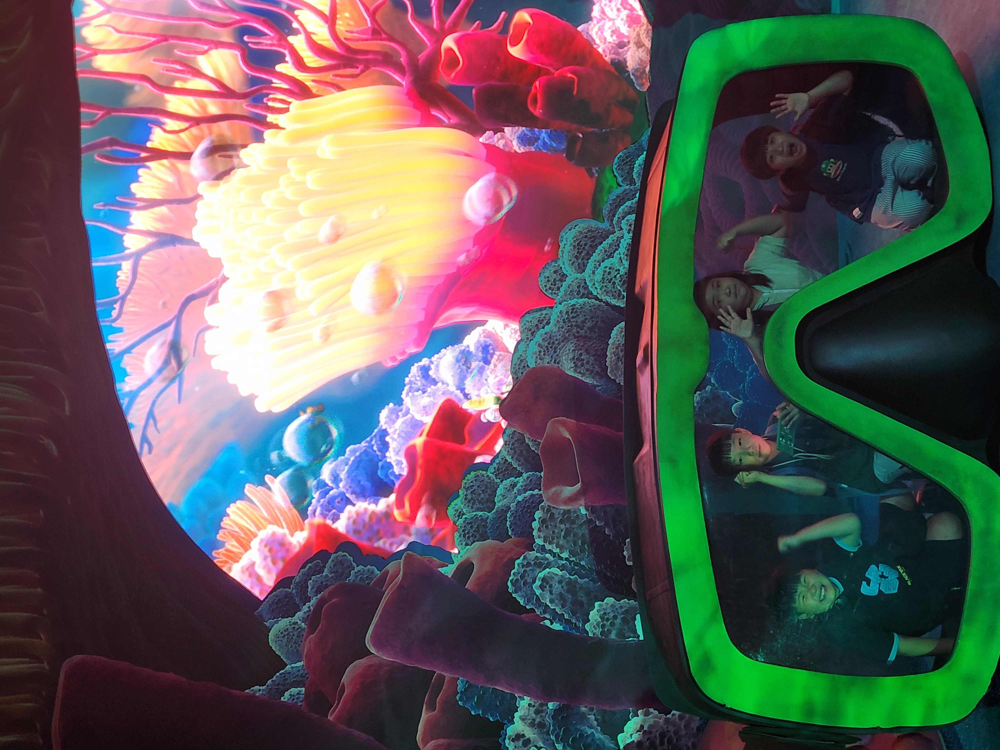
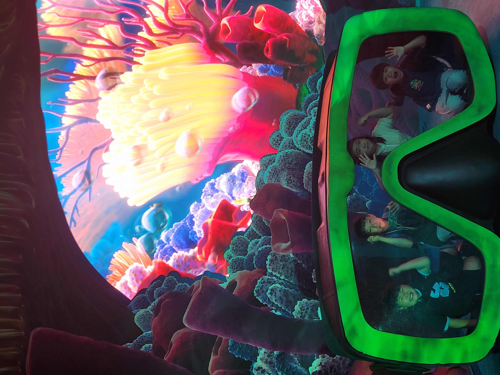
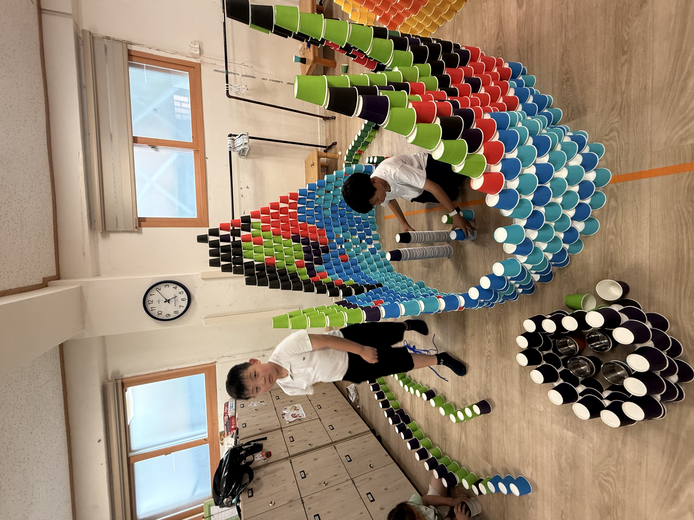
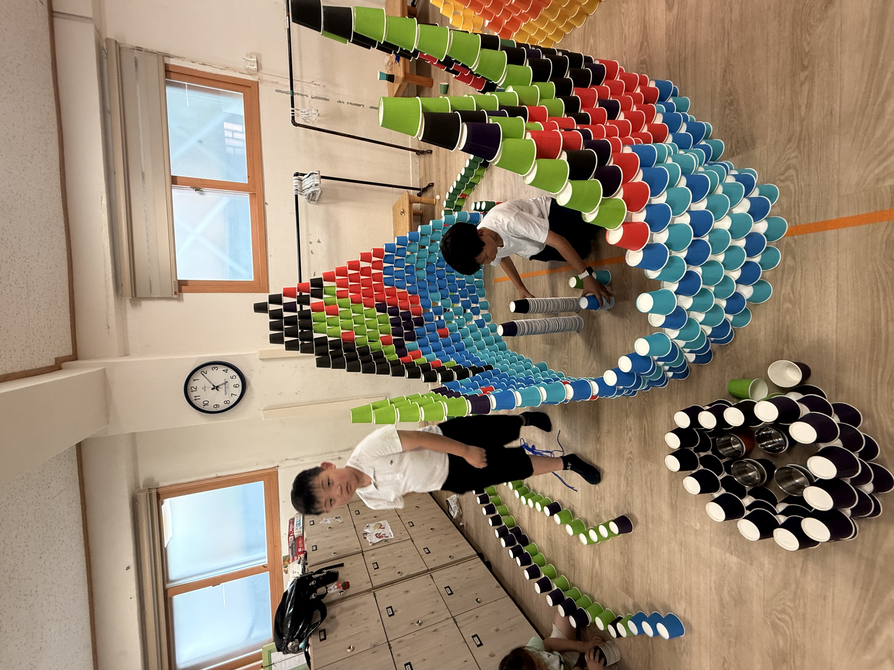

.png)
두근두근 방과후 소식지
2025년 7월호 | 우리 아이들의 특별한 이야기
💌 이사장 인사말
어느덧 에어컨 없이 지내기 힘든 여름이 되었습니다.
이 뜨거운 여름, 더 뜨거운 남쪽 경주로 두근 고학년 아이들이 여행을 떠났습니다. 희한이 가끔 보내주는 사진을 보면 초록초록한 배경의 상큼함과는 달리, 아이들은 더위에 지쳤는지 여기저기 널브러져 있습니다.
아이들이 직접 짠 계획표를 보면, 멀리 경주까지 가서 뭐 하다 오는 건가 싶은 생각도 듭니다. 늦잠을 위해 아침 건너뛰어 아점으로 먹고, 하루의 오후 전체는 자유시간입니다. 하루는 그래도 경주 시내 나들이가 계획되어 있는데, 폭염에 어찌될지 모르겠네요.
아이들이 스스로 계획하고 준비하여 떠나는 여행의 목적과 의도가 무엇인지 잘 알고 있음에도, 혹여 아이들이 재미없어 하는 건 아닐지, 힘들어만 하는 건 아닐지, 의미 있는 시간과 여행이 될지 걱정되는 것도 사실입니다.
그럴 때마다 작은눈이 해주신 콩나물 이야기를 떠올립니다. 콩나물 시루에 물을 한 바가지 주면 그냥 그대로 다 밑으로 떨어져 내린다고 합니다. 이렇게 흘러가 버린 물로 콩나물이 과연 잘 클까 걱정과 의문이 한가득 생긴다고 하네요. 하지만 어느 날 시루에 덮여 있던 천을 열어보면 쑥쑥 자라 있는 콩나물을 보게 된다고 합니다.
돌아온 아이들에게 물어보면 “더웠어”, “그냥 그랬어”, 또는 “좋았어” 한마디로 여행 소감을 끝내버릴지도 모르겠지만, 친구들과 함께 뒹군 지금의 시간이 콩나물 시루에 준 물처럼 언제가 훌쩍 커 있을 아이들의 마중물이었을 거라고 생각합니다.
경주에 가 있는 아이들뿐만 아니라, 두근의 모든 아이들이 두근에서 보내는 일견 무의미해 보이는 시간들이 건강하게 커나갈 우리 아이들을 위한 마중물일 거라 믿어 의심치 않습니다.
더 더워질 7, 8월, 두근 모든 구성원분들 화이팅입니다!
과천두근두근공동체교육사회적협동조합
이사장 딱지 드림
🗓️ 6월 주요 활동
- 🎨 픽사 전시회 관람 (18일, 24일) - 아리 인솔
- 🧘 안마봉 만들기 체험
- 🚌 5,6학년 경주 프로젝트 첫 여행 (6월 27일~30일)
- 🏓 제20회 과천시협회장배 탁구대회 참가 (6월 22일)
참여: 아이들, 아빠들, 작은눈 포함 총 14명 - 🏛️ 역사탐방 (서대문 형무소, 6월 14일 토요일) - 총 7명 참가
- 🪵 가면 만들기 (목공)
- 🎭 동두이몽 활동
- 🥾 전체 나들이
- 🏞️ 문원 체육공원 활동 - 문체축구, 문체 마당놀이
- 🚪 포로탈출 놀이
- 🏃 해방시 클럽 활동
- 📸 감정 사진집 제작
- 📚 책퀴즈 - 아리 진행
- 🕺 외부 강사 프로그램: 댄스(6명), 몰입독서(1-2학년)
🎉 활동 사진으로 보는 6월의 두근두근
아이들과 함께한 순간순간이 사진 속에 고스란히 담겼습니다. 생생한 기록과 감동을 함께 느껴보세요!
 

 


[특집]🏓 제20회 과천시협회장배 탁구대회, 두근두근방과후의 빛나는 활약!
지난 6월 22일(일), 제20회 과천시협회장배 탁구대회가 과천시민회관에서 성황리에 개최되었습니다. 이번 대회에 두근두근방과후에서는 아이들 9명, 선생님 및 아빠 5명, 총 14명이 참가하여 각자 멋진 활약을 펼쳤습니다.


🏆 쟁쟁한 동호인들과의 한판 대결
이번 대회는 과탁센(과천서 탁구가 센 동호회의 약칭)을 비롯해 강옥성탁구클럽, 과천써밋탁구회, 문원탁구클럽, 과천시청, 과천동호회 등 과천 지역 내 실력 있는 동호회 소속 참가자들이 대거 출전하여 열띤 승부를 펼쳤습니다.
🥇 주요 성과 요약
▲ 개인전 8부 우승 - 방준우(19기)
어린 나이에도 불구하고 거침없는 날카로운 공격과 침착한 경기 운영으로 8부 단식 우승을 거머쥐었습니다. 특히 결승전에서는 노란티를 입은 두근의 뜨거운 응원 열기가 코트를 가득 메웠고, 상대 선수가 당황할 정도로 열정적인 분위기를 이끌었습니다. 이번 대회 우승으로 다음 대회부터는 7부에서 활약하게 됩니다. 기대를 모았던 자타공인 두근두근 에이스 이선우(19기)는 7부에서 강력한 공격을 바탕으로 경기를 펼쳤으나 상대 선수의 노련한 경기 운영에 아쉽게도 8강 문턱을 넘지 못했습니다. 한편, 단체전에서도 좋은 결과를 얻었습니다. 한결빠, 김주원(21기), 선우빠 조는 초심부에서 3위를 차지하며 실력을 뽐내주셨습니다. 5~8부 통합에서도 이선우, 방준우(이상 19기), 한결(21기)조는 어른들과 대등한 실력을 뽐내며 8강에 진출하였습니다. 이외에도 초심부에서 김대연, 박이현(이상 19기), 대연빠 조도 8강에 진출하였습니다. 특히, 대회 첫 출전인 김주원(21기)은 단체전서 3위에 오르는 선전을 펼쳤습니다. 이번 대회에는 졸업생인 유한빈, 이유준(이상 18기), 한빈빠도 함께 두근두근 소속으로 대회에 참가하여 끈끈한 우정을 과시하였습니다. 가을에 열리는 과천시장기 대회에서도 좋은 소식을 기대해봅니다.
🎯 개인전 주요 결과
- 이선우(7부) – 16강
- 방준우(8부) – 우승
- 작은눈(8부) – 16강
- 이유준(8부) – 16강
- 김대연(초심) – 8강
- 한빈빠(초심) – 8강
- 박은강(초심) – 16강
🎯 단체전 주요 결과
- 단체전 초심부 3위 - 한결빠, 김주원(21기), 선우빠
- 단체전 초심부 8강 - 김대연, 박이현(이상 19기), 대연빠
- 단체전 5~8부 8강 - 이선우, 방준우(이상 19기), 한결(21기)
우승(방준우).jpg)
.jpg)
🟡 두근 노란티, 코트를 물들이다
경기장 곳곳에서 두근두근팀 시합이 있는 곳에서는 “노란 티 너무 예쁘다”, “작년엔 학부모까지 총출동해서 대회장이 온통 노란 물결이었다”, “아이들이 너무 자신감 있게 잘 친다”, “어리다고 우습게 봤다가 큰 코 다친다”는 등의 참가자들 이야기들이 들려왔습니다.
🌟 아이들의 놀이는 곧 성장의 무대
이번 대회를 통해 다시 한 번 확인된 것은, “두근에서의 신나는 놀이가 탁구대회에서 빛을 발하고 있다”는 사실입니다. 대회 참여를 거듭할수록 탁구는 단순한 스포츠를 넘어, 아이들이 기량을 마음껏 뽐내고, 협력할 줄 알고, 성장하며 자신감을 키우는 무대가 되었습니다.
무엇보다 이번 대회의 성과가 잠시 주춤하던 두근 내에서 탁구놀이에 다시 불을 지피고, 아이들과 아마들이 함께하는 즐거운 운동 문화로 활성화되기를 기대해봅니다.
👏 특별한 감사
이번 대회 참가 신청부터 신경써주시고, 경기 당일에도 새벽같이 와주셔서 아이들이 경기에 집중할 수 있도록 대회 끝까지 챙겨주시며 지켜봐주신 작은눈에게 깊은 감사의 마음을 전합니다.

✍️ 두근두근방과후 탁구놀이로 시작한 탁구에 대한 도전과 열정은 이번 대회에서도 그 위상을 떨쳤습니다. 두근두근 1부 1짱이 과천 1짱이 되는 그 날까지 두근두근 아이들의 성장 여정을 응원합니다!
🎉 꼬꼬무 공연 참여후기
두근두근 소식
📚 몰입독서, 그 의미와 가능성을 열다
6월27일(금) 교육소위 주관으로 전 조합원을 대상으로 진행된 몰입독서 강연은 책과 아이, 그리고 부모의 관계를 다시 돌아보게 하는 뜻깊은 시간이었습니다. 아이에게 책 읽는 습관을 길러주는 방법, 몰입독서의 실제 경험과 노하우, 그리고 IB교육과의 연계까지—다양한 관점에서 깊이 있는 배움이 있었습니다.
- 📖 "책 읽을 시간을 확보해 주는 것이 필요하다"는 말이 깊이 남았습니다.
- 👨👩👧👦 몰입독서 배경을 알고 나니 1-2학년 활동에 대한 이해도가 높아졌어요.
- ✨ 몰입독서를 통해 아이의 흥미를 어떻게 유도할 수 있을지 감을 잡았어요.
- 🤔 변화하는 시대에 아이를 어떻게 키워야 할지 방향성을 고민하게 되었어요.
강연에 참여한 조합원들은 실천적인 방법에 대한 더 많은 사례와 깊은 질의응답의 기회를 아쉬워하기도 했습니다. 하지만 강연 이후에도 질문과 나눔이 계속 이어지고 있어 두근의 배움은 지금도 계속되고 있습니다. 몰입독서가 우리 아이들뿐 아니라 부모들 일상 속에도 자연스럽게 녹아들기를 기대합니다.
[글 : 23기 가윤맘 교육이사 양파]


📅 다음 달 미리보기
다가오는 7월, 두근에서는 아이들 방학기간을 맞이하여 두근체험 여름캠프(8월중)를 준비하고 있어요!
더 즐거운 방학을 맞이할 수 있도록 함께 준비하고 기대해 주세요 😊
- 🎨 한가람 미술관 전시 관람(앤서니 브라운)
- 🥾 전체 나들이
6월 아마활동 이야기 👨👩👧👦
방과후, 관문초를 나서 숲을 지나 여느 때처럼 터전으로 나왔습니다.
1,2학년 숙제를 도와주고 (아이들 수학이 생각보다 어렵네요), 오늘의 놀이는 종이컵과 패러슈트 놀이였습니다!
먼저 놀이터에서 패러슈트 놀이를 한참했습니다. "여기서 캠프 파이어 해요, 고기도 굽고~"
실내로 들어와 어린이날 행사 때 사용한 색깔 종이컵 놀이를 할 작정이었습니다. 예상치 않게 아이들이 색깔을 분류하기 시작했고, 협동심을 기르며 종이컵을 옮기는 활동이 이어졌습니다.
그리고, 오늘의 메인 활동 ✨ 종.이.컵. 성 만들기! 용도는 바로 노래방이었습니다.
1,2학년 친구들이 노래하는 걸 좋아하길래, 함께 성을 짓고 우물도 만들고, 분실물센터도 만들었답니다.
중간에 몇 번 무너져도 "무너져도 괜찮아, 뜻대로 되지 않아도 괜찮아!" 아이들은 서로를 토닥이며 놀이의 세상을 이어갔습니다.
아늑한 종이컵 성 안에서는 작은 노래방이 열렸고, 노랫소리와 웃음소리가 한가득 울려 퍼졌습니다. 지난 졸업식 탓인지 데이식스 노래를 부르더라고요.
저는 그저 지켜볼 뿐, 놀이를 방해하지 않는 선에서 아이들의 주체적인 선택을 응원해주는 하루였습니다. 💕
[글 : 19기 찬희맘 석도사]


🙏 감사합니다
🙏 6월 아마 활동에 함께 해주셔서 감사합니다!
한여름 햇살보다 뜨거운 열정을 보여준 6월의 아마 활동에 진심으로 감사드립니다. 조합의 다양한 프로그램이 원활히 운영될 수 있었던 것은 여러분 덕분입니다. 💕
| 날짜 | 요일 | 구분 | 이름 |
|---|---|---|---|
| 6/2 | (월) | 교육아마 | 20기 박연재맘 |
| 6/12 | (목) | 교육아마 | 19기 김찬희맘 |
| 6/12 | (목) | 주방아마 | 21기 김연아맘 |
| 6/13 | (금) | 교육아마 | 21기 김수인맘 |
| 6/26 | (목) | 교육아마 | 20기 임연준맘 |
| 6/27 | (금) | 교육아마 | 21기 김연아맘 |
| 6/27 | (금) | 교육아마 | 22기 하은우빠 |
| 6/27 | (금) | 돌봄아마 | 22기 배준서맘 |
| 6/27 | (금) | 돌봄아마 | 22기 강서연빠 |
| 6/27 | (금) | 돌봄아마 | 21기 김연아맘 |
| 6/30 | (월) | 교육아마 | 20기 박연재맘 |
| 6/30 | (월) | 하교지도아마 | 24기 김서현맘 |